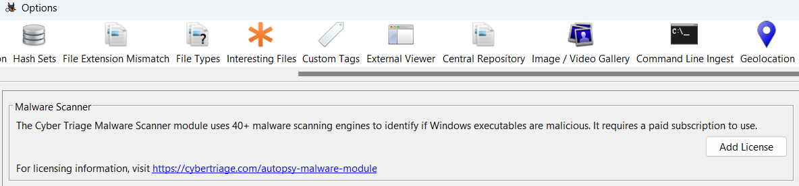
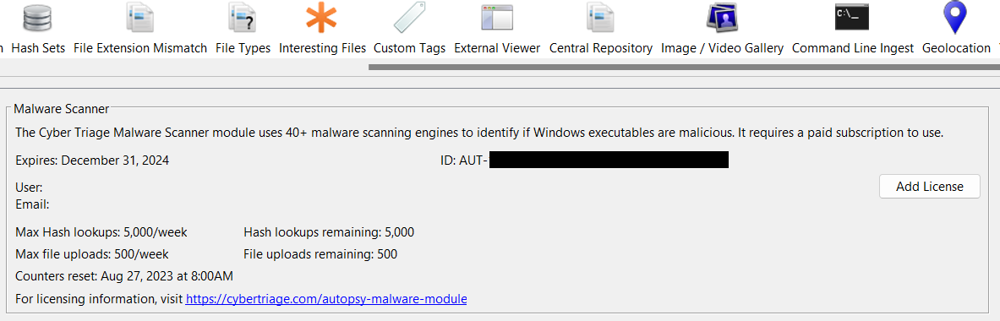
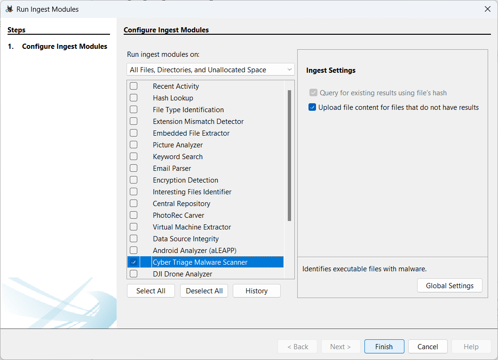
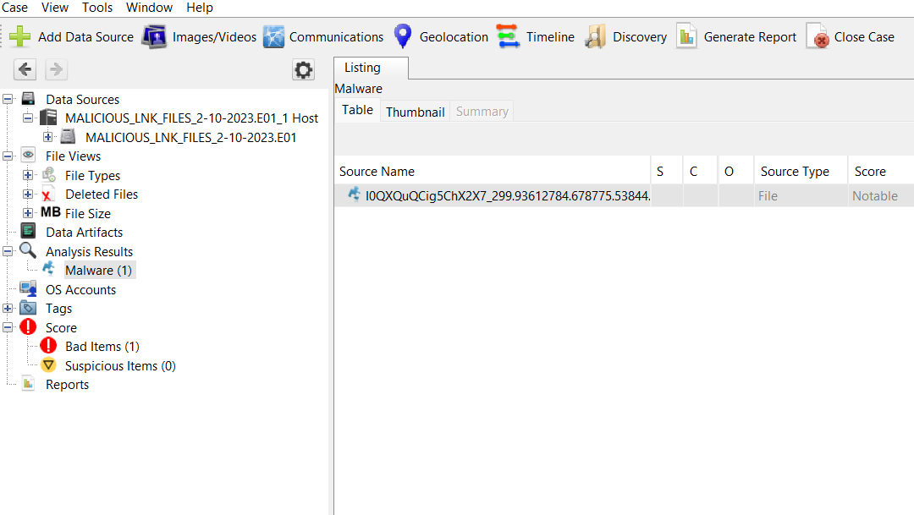

|
Autopsy User Documentation 4.22.1
Graphical digital forensics platform for The Sleuth Kit and other tools.
|
The Cyber Triage Malware Scanner module will use the malware scanning infrastructure from Cyber Triage to identify if any Windows executables are malware. It will query an online service using the file's hash value to see if the file was already analyzed and allows you to upload files for analysis if they are new.
This module requires a commercial license from Cyber Triage.
For more information on what the module does or obtaining a license, refer to CyberTriage.com. The remainder of this page is about the use of the module once it is licensed.
You will need to first get a paid or eval license from the above URL. The code will come in via email. Example license formats include:
Once you have a license, you must add it on the Autopsy Options panel. Choose the 'Cyber Triage' tab and choose 'Add License'.

After you enter the license number from your email, you will then need to review and agree to the license terms.
The options panel should now display information about the lookup limits. You can always refer back to here about what your limits are and when they reset.

For each data source, you select if you want files to be uploaded if they have not already been analyzed. By default, they are uploaded. You can choose to not upload them though. Refer to the main website for details on what happens when files are uploaded.

If you go beyond your limits, you will get a dialog that not all files were analyzed. You can wait until your limits reset and then start ingest again with only the malware scanning module enabled. It will ignore the files that are already analyzed.
Once ingest has completed, the files with malware will be listed in the Malware node in the tree.

Copyright © 2012-2024 Sleuth Kit Labs. Generated on Mon Apr 14 2025
This work is licensed under a
Creative Commons Attribution-Share Alike 3.0 United States License.